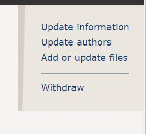
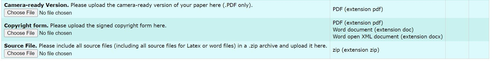

The proceedings of PKAW 2024 have been released on Springer. Free access has been granted until 15 December 2023 if you click the below link.
https://link.springer.com/book/10.1007/978-981-99-7855-7
Welcome to PKAW 2024
Welcome to the 2024 Principle and practice of data and Knowledge Acquisition Workshop (PKAW). In the past, the workshops have been held in Guilin (2006), Hanoi (2008), Daegu (2010), Kuching (2012), Gold Coast (2014), Phuket (2016), Nanjing (2018), Fiji (2019), Yokohama (2020, online), Shanghai (2022, hybrid), and Jakarta (2023, hybrid), PKAW 2024 will be collocated with the 21st Pacific Rim International Conference on Artificial Intelligence (PRICAI 2024) and held in Kyoto, Japan in November 2024.
PKAW has provided a forum for researchers and practitioners to discuss the state-of-the-art in the areas of knowledge acquisition and machine intelligence (MI, also Artificial Intelligence, AI). PKAW 2024 will continue the above focus and welcome the contributions to the multi-disciplinary approach of human and big data-driven knowledge acquisition and AI techniques and applications.
AI is changing the way in which organizations innovate and communicate their processes, products, and services. Also, in our daily life, AI-embedded devices such as smart speakers are about to become widely used, which extends the possibility of acquiring knowledge from users’ behavior observed through the interaction between those devices and their users. Knowledge acquisition and learning from big data are becoming more challenging than ever. Various knowledge can be acquired not only from human experts but also from heterogeneous data. Multidisciplinary research, including knowledge engineering, artificial intelligence and machine learning, human-computer interaction, etc., is required to meet the challenge. We invite authors to submit papers on all aspects of these areas.
Furthermore, not only in the engineering field but also in the social science field (e.g., economics, social networks, and sociology), recent progress in knowledge acquisition and data engineering techniques is realizing interesting applications. We also invite submissions that present applications tested and deployed in real-life settings and lessons learned during this process.
Proceedings of PKAW 2024 will be published by Springer as a volume of Lecture Notes in Artificial Intelligence (LNAI) series (TBC). For more details, please visit here.
Important Dates
- Paper Submission Deadline: 01 August 2024
- Acceptance Notification: 15 September 2024
- Camera-ready Submission: 18 September 2024
- Workshop Date: 18-19 November 2024

CALL FOR PAPERS
PKAW (Principle and Practice of Data and Knowledge Acquisition Workshop) was established in 1980s as an integral part of PRICAI (Pacific Rim International Conference on Artificial Intelligence). PKAW 2024 will be held virtually at the 21st Pacific Rim International Conference on Artificial Intelligence (PRICAI 2024) in Kyoto, Japan. A wide range of topics related to knowledge acquisition and representation are greatly welcome.
Important Dates
- Paper Submission: 01 August 2024
- Notification: 15 September 2024
- Camera-Ready Submission: 18 September 2024
- Workshop Date: 18-19 November 2024
Areas of Interest
All aspects of AI, machine learning, knowledge acquisition, data engineering and management for intelligent systems, including (but not restricted to):- Knowledge Acquisition
- Fundamental views on knowledge that affect the knowledge acquisition process and the use of knowledge in knowledge engineering
- Algorithmic approaches to knowledge acquisition
- Tools and techniques for knowledge acquisition, knowledge maintenance and knowledge validation
- Evaluation of knowledge acquisition techniques, tools and methods.
- Ontology and its role in knowledge acquisition
- Knowledge acquisition applications tested and deployed in real-life settings
- Knowledge Representation and Discovering
- Knowledge representation learning
- Temporal knowledge graph
- Data linkage
- Data analytics and mining
- Big data acquisition and analysis
- Machine learning/deep learning
- Semantic Web, the Linked Data and the Web of Data
- Responsible Data/Knowledge Management and System
- Transparency, explainability, trust, and accountability
- Privacy and security
- Other ethical concerns
- Knowledge-aware Application
- Question answering
- Recommendation system
- Domain-related application
- Human-centric Knowledge Engineering
- Human-machine collaboration, integration, interaction, delegation, dialog
- Hybrid approaches combining knowledge engineering and machine learning
- Other Topics
- Experience and Lesson learned
- Reproducibility and negative results of knowledge engineering
- Innovative user interfaces
- Crowd-sourcing for data generation and problem solving
Paper Submission
PKAW will not accept any paper that, at the time of submission, is under review for, has already been published in, or has already been accepted for publication in, a journal or another venue with formally published proceedings. If part of the work has been previously published, authors are strongly encouraged to cite and compare/contrast the new contributions with the parts that were already published before. The paper must substantially extend the previously published work.
PKAW 2024 will adopt single-blind rule for the reviewing process, i.e., the authors do not know the names of the reviewers, but the reviewers can infer the names of the authors from the submission.
Proceedings of PKAW 2024 will be published by Springer as a volume of Lecture Notes in Artificial Intelligence (LNAI) series (TBC). All papers for the review should be submitted electronically using the conference management tool in PDF format and formatted using the Springer LNAI template. The main content of the paper should not exceed 12 pages long (excluding references). For accepted papers, the latex source files and a camera-ready version are required to be submitted using the Springer LNAI template. For Springer LNAI format templates, please visit the Springer’s website below.
Contact
For any questions, please contact Dr. Shiqing Wu (shiqing.wu@uts.edu.au) and Dr. Xing Su (xingsu@bjut.edu.cn).ORGANIZING COMMITTEE
Workshop Chairs

Shiqing Wu
University of Technology Sydney, Australia

Xing Su
Beijing University of Technology, China
Program Chairs

Xiaolong Xu
Nanjing University of Information Science and Technology, China
Publicity Chairs

Md Rafiqul Islam
Australian Institute of Higher Education, Australia

Jiaxing Shen
Linnan University, China

Yu Yang
The Hong Kong Polytechnic University, China
Honorary Chairs

Paul Compton
University of New South Wales, Australia

Hiroshi Motoda
Osaka University, Japan
Advisory Committee

Byeong Kang
University of Tasmania, Australia

Quan Bai
University of Tasmania, Australia

Qing Liu
Data61, CSIRO, Australia

Maria R Lee
Shih Chien University, China

Kenichi Yoshida
University of Tsukuba, Japan

Deborah Richards
Macquarie University, Australia
PC MEMBERS
TBAThe University of New South Wales, Australia
Japan Advanced Institute of Science and Technology, Japan
Jilin University of Finance and Economics, China
National Institute of Advanced Industrial Science and Technology (AIST), Japan
University of Technology Sydney, Australia
Auckland University of Technology, New Zealand
Auckland University of Technology, New Zealand
Central China Normal University, China
Aoyama Gakuin University, Japan
Nihon University, Japan
University of Wollongong, Australia
University of Technology Sydney, Australia
University of Tasmania, Australia
Keio University, Japan
Hefei University of Technology, China
University of Wollongong, Australia
Nara Women's University, Japan
Zhejiang University, China
PROGRAM
TBAPrinciple and practice of data and Knowledge Acquisition Workshop (PKAW 2024)15 November 2023Zoom link: TBA |
||
|---|---|---|
| Time (Jakarta time, GMT+7) |
Session | |
| 9:00-9:10 | Opening address | |
| Session 1 | 9:10-10:00 |
Keynote 1: Game Theory and Machine Learning for Addressing Societal Challenges: From Theory to Real-World Impact Speaker: Prof. Fei Fang Session Chair: Quan Bai |
| 10:00-10:40 (Each paper has 15 minutes for presentation and 5 mins for Q&A) |
Automated Cattle Behavior Classification using Wearable Sensors and Machine Learning Approach Niken Prasasti Martono, Rie Sawado, Itoko Nonaka, Fuminori Terada and Hayato Ohwada An Assessment of the Influence of Interaction and Recommendation Approaches on the Formation of Information Filter Bubbles Zihan Yuan, Weihua Li and Quan Bai |
|
| 10:40-11:00 | Break (Morning Tea) | |
| Session 2 | 11:00-12:30 (Each paper has 15 minutes for presentation and 5 mins for Q&A) |
Session Chair: Wenli Yang Predicting Peak Demand Days for Asthma-Related Emergency Hospitalisations: A Machine Learning Approach Rashi Bhalla, Farhaan Mirza, M. Asif Naeem and Amy Chan Exploring the Potential of Image Overlay in Self-Supervised Learning: A Study on SimSiam Networks and Strategies for Preventing Model Collapse Li Xiao, Weihua Li, Quan Bai and Minh Nguyen LexiFusedNet: A Unified Approach for Imbalanced Short-text Classification using Lexicon-based Feature Extraction, Transfer Learning and One Class Classifiers Saugata Bose and Guoxin Su Balanced Graph Structure Information for Brain Disease Detection Falih Febrinanto, Mujie Liu and Feng Xia |
| 12:30-14:00 | Break (Lunch) | |
| Session 3 | 14:00-14:50 |
Keynote 2: Knowledge Structurization over Texts: Neural Information Extraction based Approaches and Recent Advances Speaker: Prof. Xiang Zhao Session Chair: Qing Liu |
| 14:50-15:30 (Each paper has 15 minutes for presentation and 5 mins for Q&A) |
Information Gerrymandering in Elections Xiaoxue Liu, Shohei Kato, Fenghui Ren, Guoxin Su, Minjie Zhang and Wen Gu BoCB: Performance Benchmarking by Analysing Impacts of Cloud Platforms on Consortium Blockchain Zhiqiang Huang, Saurabh Grag, Wenli Yang, Ankur Lohachab, Muhammad Bilal Amin and Byeong Kang |
|
| 15:30-16:00 | Break (Afternoon Tea) | |
| Session 4 | 16:00-17:30 (Each paper has 15 mins for presentation and 5 mins for Q&A) |
Session Chair: Shiqing Wu Blockchain as a Collaborative Technology - Case Studies in the Real Estate Sector in Vietnam Kha Nguyen Hoang, Trong Nguyen Duong Phu, Triet Nguyen Minh, Huong Hoang Luong, Khoa Tran Dang, Khiem Huynh, Phuc Nguyen Trong, Hieu Doan Minh, Quy Lu, Nguyen The Anh, Ngan Nguyen Thi Kim, Hien Nguyen Quang, Bang Le Khanh, Bao Tran Quoc, and Khanh Vo Hong Discovering maximal high utility co-location patterns from spatial data Vanha Tran Indonesian Forest Fire Data Clustering using Spatiotemporal Data Using Grid Density-Based Clustering Algorithm Devi Fitrianah, Hisyam Fahmi, Ade Putera Kemala and Muhammad Edo Syahputra |
| 17:30-17:40 | Closing remark | |
REGISTRATION
TBARegistration is now available for both the author(s) and general participants. You may pay the registration fee using GriffithPay. Please select Pre-conference option only and do not select registration option.
Also, please kindly complete the registration form here. If you are an author of an accepted paper, please fill in your Paper ID in the registration form. For example, if your paper ID is 1234, then fill in "PKAW_1234". Incorrect paper ID (such as, 1234, or pkaw1234) will lead to the failure of registration.
The details of registration fee is listed below. Authors and general participants must register using the registration link above and pay the registration fee using GriffithPay before the deadline.
Note: Student registrants must send a letter from their University/Institution confirming their studentship to shiqing.wu@uts.edu.au.| Non-Student | Student | Due date | |
|---|---|---|---|
| PreConference(1-day) | $170 USD | $130 USD | 22 September 2023 |
Camera-ready Submission
The link for camera-ready submission has been sent to author via emails.Please follow the instruction attached in the email to complete the submission by 16 Oct 2023.
Camera-ready Submission
Submission Instruction
To smoothly publish your work in the Springer proceedings, you must submit the camera-ready paper, source files, and the signed and completed copyright transfer form by 15 September 2023. You need to submit the files using your EasyChair author account, as follows:
- Log into Easychair, select the author role, and go to your accepted paper(s).
- Go to "Add or update files".
 - Upload required files correspondingly. You don't need to update the original submission, but just upload the required camera-ready paper, source files, and the signed and completed copyright transfer form.

Camera-ready Copy and Source files Submission
Please follow the Submission Instruction to upload two files:
-
Either a zipped file containing all your LaTeX sources (LaTeX files with all the associated style files, special fonts, eps files and the underlying bib file for the references);
OR a Word file in RTF format, and - PDF version of your camera-ready paper.
Please follow strictly the "Springer Author Instructions" when preparing the final version. Download and use the correct template (either in Latex or MS Word) to prepare your final camera-copy paper. Papers must be in trouble-free, high-resolution PDF format. Use only the arabic numbers system (i.e. [1], [3-5], [4-6,9]) for your references. Please also pay attention to Springer's Editorial Policies when preparing your final copy.
The page limit given in the proceedings is strict as follows. Note that NO appendix is allowed.
- Long papers: 12 pages (excluding references)
- Short papers: 8 pages (excluding references)
When submitting your paper, a corresponding author must be available to carry out a proof check of the paper. The corresponding author should be clearly marked as such in the header of the paper. He or she is also the one who signs the consent-to-publish form on behalf of all of the authors. Our publisher has recently introduced an extra control loop: once data processing is finished, they will contact all corresponding authors and ask them to check their papers. We expect this to happen shortly before the printing of the proceedings. At that time your quick interaction with Springer will be greatly appreciated.
Copyright Form Submission
Please upload a signed and completed copyright form in EasyChair as soon as possible using the pre-filled Springer copyright form. Please do not change the main content and pre-filled content.
It is sufficient for one corresponding author to sign the copyright form. Springer requests that the corresponding author, who should match the corresponding author marked on the paper, must have the full right, power, and authority to sign the agreement on behalf of all of the authors of a particular paper, and accepts responsibility for releasing this material on their behalf. Spring does not accept digital signatures on the consent-to-publish forms at present.
KEYNOTE SPEAKERS
TBAProf. Fei Fang
Carnegie Mellon University, USA
Game Theory and Machine Learning for Addressing Societal Challenges: From Theory to Real-World Impact
Abstract: Societal challenges spanning security, environmental sustainability, food security, and transportation often involve complex decision-making by multiple self-interested agents. In our research, we delve into the development of game theory and machine learning-based methodologies and tools to tackle these challenges, with a strong focus on contributing to the social good. In this talk, I will introduce our work that has led to successful applications in ferry protection, environmental conservation, and food rescue. Moreover, I will cover our foundational research in inverse game theory, scalable game solving, and interpretable multi-agent reinforcement learning. These advancements are motivated by the real-world problems we have been working on and enable us to tackle more complex decision-making scenarios in the future.
Bio: Dr. Fei Fang is an Associate Professor at the Software and Societal Systems Department in the School of Computer Science at Carnegie Mellon University. Before joining CMU, she was a Postdoctoral Fellow at the Center for Research on Computation and Society (CRCS) at Harvard University, hosted by David Parkes and Barbara Grosz. She received her Ph.D. from the Department of Computer Science at the University of Southern California advised by Milind Tambe (now at Harvard). Her research lies in the field of artificial intelligence and multi-agent systems, focusing on integrating machine learning with game theory. Her work has been motivated by and applied to security, sustainability, and mobility domains, contributing to the theme of AI for Social Good. She is the recipient of the 2022 Sloan Research Fellowship and IJCAI-21 Computers and Thought Award. She was named to IEEE Intelligent Systems’ “AI’s 10 to Watch” list for 2020. Her work has won the Deployed Application Award at IAAI’23, Best Paper Honorable Mention at HCOMP’22, Best Paper Runner-Up at AAAI’21, Distinguished Paper at IJCAI-ECAI’18, Innovative Application Award at IAAI’16, the Outstanding Paper Award in Computational Sustainability Track at IJCAI’15. She received an NSF CAREER Award in 2021. Her dissertation is selected as the runner-up for IFAAMAS-16 Victor Lesser Distinguished Dissertation Award, and is selected to be the winner of the William F. Ballhaus, Jr. Prize for Excellence in Graduate Engineering Research as well as the Best Dissertation Award in Computer Science at the University of Southern California.
Prof. Xiang Zhao
National University of Defense Technology, China
Knowledge Structurization over Texts: Neural Information Extraction based Approaches and Recent Advances
Abstract: Although recent large language models (LLMs) offer a friendly way to communicate and acquire knowledge from machines, they still suffer from inaccuracy and hallucination issues. In contrast, structured knowledge bases (KBs) can provide reliable, machine-readable facts while preserving human interpretability. In other words, knowledge bases containing these structured entities, relations, events and their semantic connections are currently crucial for powering intelligent applications. However, constructing such knowledge bases relies heavily on extracting structured information from unstructured textual data, with which one can populate knowledge bases with facts harvested from textual corpora in a scalable manner. The process is coined as knowledge structurization. In this talk, I will present the notion of knowledge structurization over texts using neural information extraction techniques, and then I will share our recent work on developing neural models for relation extraction and triplet extraction. Finally, I will discuss open challenges and future directions in improving knowledge structurization quality. I hope this talk will provide valuable insights into bridging the gap between unstructured texts and structured knowledge using neural information extraction. The techniques presented will push the boundaries of automated knowledge base construction.
Bio: Dr. Xiang Zhao is currently a full professor at Laboratory of Big Data and Decision, National University of Defense Technology, China, where he serves as the head of the direction of knowledge systems engineering. In 2013, he got PhD of Computer Science and Engineering, the University of New South Wales, Australia. He is a distinguished member of China Computer Federation (CCF), the deputy secretary general of CCF Technical Committee on Information Systems, a member of CCF Expert Committee on Big Data, an executive member of CCF Technical Committee on Databases. He was selected for the project for high-level young talents of Ministry of Education of China and Young Talents Lift-up Program of China Association for Science and Technology, also a recipient of National Key R&D Program for Young Scientists and ACM SIGMOD China Rising Star Award. His research interests include Knowledge Graphs, Advanced Data Management, and Information Retrieval.